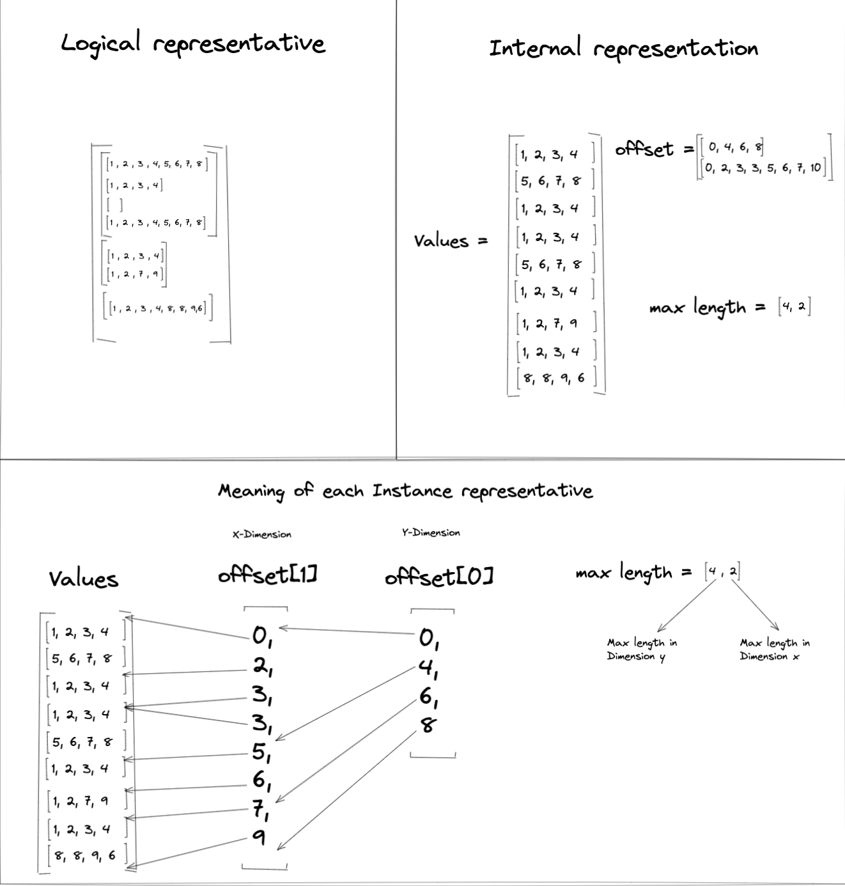

Jagged Tensor Operators¶
High Level Overview¶
The purpose of jagged tensor operators is to handle the case where some
dimension of the input data is “jagged,” i.e. each consecutive row in a given
dimension may be a different length. This is similar to the NestedTensor
implementation
in PyTorch and the RaggedTensor
implementation in
Tensorflow.
Two notable examples of this type of input are:
Sparse feature inputs in recommendation systems
Batches of tokenized sentences which may be input to natural language processing systems.
Jagged Tensor Format¶
Jagged tensors are effectively represented in FBGEMm_GPU as a three-tensor object. The three tensors are: Values, MaxLengths, and Offsets.
Values¶
Values is defined as a 2D tensor that contains all the element values
in the jagged tensor, i.e. Values.numel() is the number of elements in the
jagged tensor. The size of each row in Values is derived from the greatest
common divisor for the smallest (most-inner) dimension sub-tensor
(excluding tensors of size 0) in the jagged tensor.
Offsets¶
Offsets is a list of tensors, where each tensor Offsets[i] represents
the partitioning indices of the values of the next tensor in the list,
Offsets[i + 1].
For example, Offset[i] = [ 0, 3, 4 ] implies that the current
dimension i is divided into two groups, denoted by index bounds
[0 , 3) and [3, 4). For each Offsets[i], where
0 <= i < len(Offests) - 1, Offsets[i][0] = 0, and
Offsets[i][-1] = Offsets[i+1].length.
Offsets[-1] refers to the outer dimension index of Values (row index),
i.e. offsets[-1] would be the partition index of Values itself. As
such, Offsets[-1], the tensor begins with 0 and ends with
Values.size(0) (i.e. the number of rows for Values).
Max Lengths¶
MaxLengths is a list of integers, where each value MaxLengths[i]
represents the maximum value between corresponding offset values in
Offsets[i]:
MaxLengths[i] = max( Offsets[i][j] - Offsets[i][j-1] | 0 < j < len(Offsets[i]) )
The information in MaxLengths is used for performing the conversion from
jagged tensor to normal (dense) densor where it will be used to determine the
shape of the tensor’s dense form.
Jagged Tensor Example¶
The figure below shows an example jagged tensor that contains three 2D sub-tensors, with each sub-tensor having a different dimension:
In this example, the sizes of the rows in the inner-most dimension of the jagged
tensor are 8, 4, and 0, and so number of elements per row in
Values is set to 4 (greatest common divisor). This means Values
must be of size 9 x 4 in order to accomodate all values in the jagged
tensor.
Because the example jagged tensor contains 2D sub-tensors, the Offsets list
will need to have a length of 2 to create the partitioning indices.
Offsets[0] represents the partition for dimension 0 and Offsets[1]
represents the partition for dimension 1.
The MaxLengths values in the example jagged tensor are [4 , 2].
MaxLengths[0] is derived from Offsets[0] range [4, 0) and
MaxLengths[1] is derived from Offsets[1] range [0, 2) (or
[7, 9], [3,5]).
Below is a table of the partition indices applied to the Values tensor to
construct the logical representation of the example jagged tensor:
|
|
|
Corresponding |
|
|
Corresponding |
|---|---|---|---|---|---|---|
|
|
Group 1 |
|
|
Group 1 |
|
|
Group 2 |
|
||||
|
Group 3 |
|
||||
|
Group 4 |
|
||||
|
Group 2 |
|
|
Group 5 |
|
|
|
Group 6 |
|
||||
|
Group 3 |
|
|
Group 7 |
|
Jagged Tensor Operations¶
At the current stage, FBGEMM_GPU only supports element-wise addition, multiplication, and conversion operations for jagged tensors.
Arithmetic Operations¶
Jagged Tensor addition and multiplication works similar to the
Hadamard Product
and involves only the Values of the jagged tensor. For example:
As such, arithmetic operations on jagged tensors require the two operand to have same shape. In other words, if we have jagged tensors, \(A\), \(X\), \(B\), and \(C\), where \(C = AX + B\), then the following properties hold:
// MaxLengths are the same
C.maxlengths == A.maxlengths == X.maxlengths == B.maxlengths
// Offsets are the same
C.offsets == A.offsets == X.offsets == B.offsets
// Values are elementwise equal to the operations applied
C.values[i][j] == A.values[i][j] * X.values[i][j] + B.values[i][j]
Conversion Operations¶
Jagged to Dense¶

Conversions of a jagged tensor \(J\) to the equivalent dense tensor \(D\)
starts with an empty dense tensor. The shape of \(D\) is based on the
MaxLengths, the inner dimension of Values, and the length of
Offsets[0]. The number of dimensions in \(D\) is:
rank(D) = len(MaxLengths) + 2
For each dimension in \(D\), the dimension size is:
dim(i) = MaxLengths[i-1] // (0 < i < D.rank-1)
Using the example jagged tensor from
Jagged Tensor Example, len(MaxLengths) = 2, so
the equivalent dense tensor’s rank (number of dimension) will be 4. The
example jagged tensor two offset tensors, Offsets[0] and Offsets[1].
During the conversion process, elements from Values will be loaded onto the
dense tensor based on the ranges denoted in the partition indices of
Offsets[0] and Offsets[1] (see the
table for the mapping
of the groups to corresponding rows in the dense table):

Some parts of \(D\) will not have values from \(J\) loaded into it since
not every partition range denoted in Offsets[i] has a size equal to
MaxLengths[i]. In that case, those parts will be padded with a pad value.
In the above example, the pad value is 0.
Dense to Jagged¶
For conversons from dense to jagged tensors, values in the dense tensor are
loaded into the jagged tensor’s Values. However, it’s possible that the
given dense tensor is not same shape referring to the Offsets. It could
lead to the case where jagged tensor can not read in corresponding dense location
if dense’s related dimension is smaller than expected. When this happens we
give the padded value to corresponding Values (see below):

Combined Arithmetic + Conversion Operations¶
In some situations, we would like to perform the following operation:
dense_tensor + jagged_tensor → dense_tensor (or jagged_tensor)
We can break such an operation into two steps:
Conversion Operation - convert from jagged → dense or dense → jagged depending on the desired format for the target tensor. After conversion, the operand tensors, be it dense or jagged, should have the exact same shapes.
Arithmetic operation - perform the arithmetic operations as usual for dense or jagged tensors.